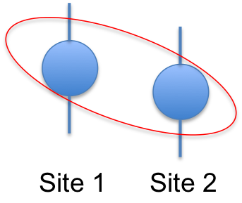
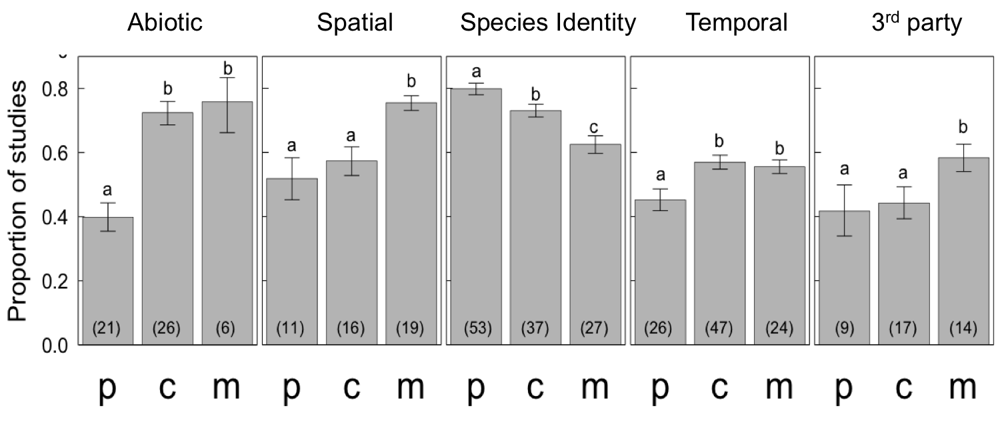
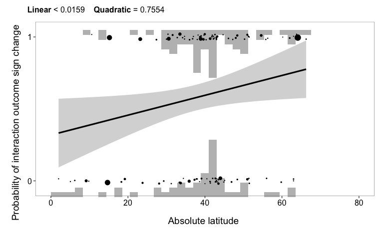
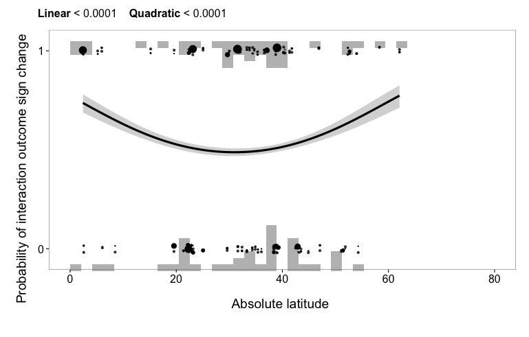

Variation in species interaction outcomes
Scott Chamberlain
28 September 2012
Shortcuts:
- M =

- G =
Interaction outcomes are important for:
Individual growth and reproduction (REF)
What about variation in outcomes?
Outcomes are not just +, 0, or -
Outcomes within a species interaction can range from - to +
What is meant by variation in interaction outcomes?
-
Not error variation in outcome in one context
-
The variation in outcomes among more than one context

Variation in interaction outcomes - example
-
Not error variation in outcome in one context
-
The variation in outcomes among more than one context
Variation in outcomes is common
Mutualism
Herbivory outcome for Acacia trees varies with ant species identity (Palmer et al. 2008)
Variation in outcomes is common
Competition/facilitation
Outcomes vary from competition at low elevation to facilitation at high elevation (Callaway et al. 2002)
And people are calling for examination of variation
To the extent that different biotic interactions are important contributors to different population dynamics within a species, variable interactions might be expected to be a powerful such source. - Joseph Travis 1996 AmNat
The full range of natural outcomes...may reveal far more about...ecological and evolutionary dynamics than does the average outcome. - Judith Bronstein 1994 TREE
...understanding context-dependency is critical for such reconciliation [of variation in species interaction outcomes]. - Anurag Agrawal et al. 2007 FREE
Two major distinctions:
- Types of species interactions, and
- Gradients along which interaction occur
How do different species interaction types differ in variation in outcomes?
-
Mean strength
-
Mutualisms weaker than antagonisms (Morris et al. 2007)
-
General sense in literature that mutualisms less important because so variable (Sachs & Simms 2006)
-
Weak interactions the most variable (Berlow et al. 1999)
-
Interaction complexity
Gradients that drive variation in interaction outcome
-
Same two species
-
Abiotic: Nutrients
-
Space: Across sites
-
Time: Across hours, days, or years
-
Third party presence: Two species w/ or w/o a third species
-
Just one species is the same
-
Species identity: Sp. A interacts with either sp. B or sp. C
Questions
-
How do different species interaction types differ in variation in outcomes?
-
What are the relative importance of drivers of variation in outcomes?
-
How does variation in outcome vary with latitude?
Meta-analysis
-
Web of Science search
-
Experimental studies only
-
Interaction outcome w/ & w/o competitor, predator, or mutualist
-
Error estimates & sample sizes available
-
Response variables: abundance, population growth, reproduction, etc.
-
Responses measured over >1 year, population, or species, etc.
Example of getting data from a single study
Data analyses
Weighted general linear models
Magnitude (CV)
CV ~ context type + species interaction type + err
CV ~ context type + species interaction type + study location + err
CV ~ context type + species interaction type + ecosystem + err
Sign change
sign change ~ context type + species interaction type + err
sign change ~ context type + species interaction type + study location + err
sign change ~ context type + species interaction type + ecosystem + err
Final dataset - 353 papers
How do different species interaction types differ in variation in outcomes?
How do different species interaction types differ in variation in outcomes?
How do different species interaction types differ in variation in outcomes?
Why is mutualism more variable?
-
I don't know, but...
-
A few possibilities:
Conditionality seems to be discussed more in the mutualism literature, but perhaps just what mutualism people are interested in?
Possible that species interactions are misidentified? -> Predation is likely predation, whereas not so for mutualism and competition
Mutualism is just more variable = but what is it that makes this so? Any ideas?
What are the relative importance of drivers of variation in outcomes?
-
Same two species
-
Abiotic: Nutrients
-
Space: Across sites
-
Time: Across hours, days, or years
-
Third party presence: Two species w/ or w/o a third species
-
Just one species is the same
-
Species identity: Sp. A interacts with either sp. B or sp. C
What are the relative importance of drivers of variation in outcomes?
What does this mean?
Species identity > third party presence
Suggests it's really species identity that matters when considering community context
Spatial tended to be > temporal variation, but not significant
Interesting that just as much variation in interactions can occur in space as in time
Drivers of variation in outcomes X interaction type? - Sign

Drivers of variation in outcomes X interaction type? - Sign
Mutualism > predation & competition along spatial and 3rd party axes
Makes sense at least in some mutualisms, e.g. ->
Drivers of variation in outcomes X interaction type? - Sign
Predation < competition & mutualism along abiotic and temporal axes
Predator-prey with largely mobile species, escape abiotic constraints
How does variation in outcome vary with latitude?
Interaction outcomes are thought to increase nearer the equator (Schemske et al. 2009)
Greater biodiversity => greater dependence on biotic vs. abiotic interactions => Thus, stronger biotic interactions nearer equator
What about variation?
Stronger mean interactions are thought to be associated with less variation (Berlow 1999)
But...
Variation could increase nearer equator if greater biodiversity leads to greater conditionality
How does variation in outcome vary with latitude? - Predation
How does variation in outcome vary with latitude? - Competition

How does variation in outcome vary with latitude? - Mutualism

How does variation in outcome vary with latitude?
Not sure - help?
Conclusions
-
Types of species interactions differed in outcome variation
We can't treat different species interactions as equivalent
In interaction webs, it may be most important to understand variation in mutualistic links
-
Types of gradients differed in outcome variation
Some sources of variation in species interactions should be given priority (i.e., species identity), especially in new study systems
-
Variation may depend on latitude, or some variable correlated with latitude
If this is the case, could mean that variation can increase in some areas more than others with climate change, when variation in species interactions depends on abiotic variables
Future work
-
What about latitude is correlated with variation in interaction outcomes?
Exploring this question with Jeremy Kerr (Univ. Ottawa), for example, looking at:
Temperature
Precipitation
-
Add other species interaction types
-
Do any variables correlate with variation in species interaction outcomes?
Do body size ratios predict variable outcomes?
Does global warming alter variation in interaction outcomes?
-
Testing the idea in the field
-
Do any variables correlate with variation in species interaction outcomes?
Do body size ratios predict variable outcomes?
Thanks to...
-
Data
Tens of authors who provided data
-
Data collection
Yosuke Akiyama, Neha Deshpande, Rohini Sigireddi, Prudence Sun, Edward Realzola, Rameez Anwar, Matt King, Roy Wu, Than Vu
-
Discussion
The Rudgers-Whitney lab, Jennifer Rudgers, Ken Whitney, Volker Rudolf, Dennis Cox, Steve Hovick, Tom E.X. Miller, Elizabeth Elle, Lisandro Benedetti-Cecchi
←
→
/
#